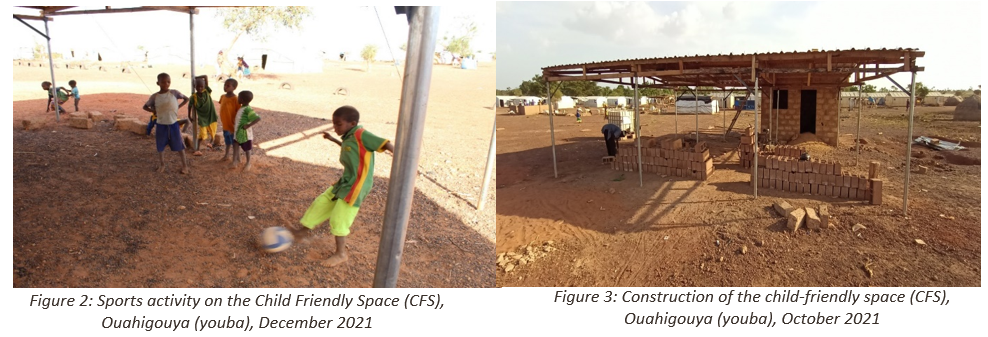
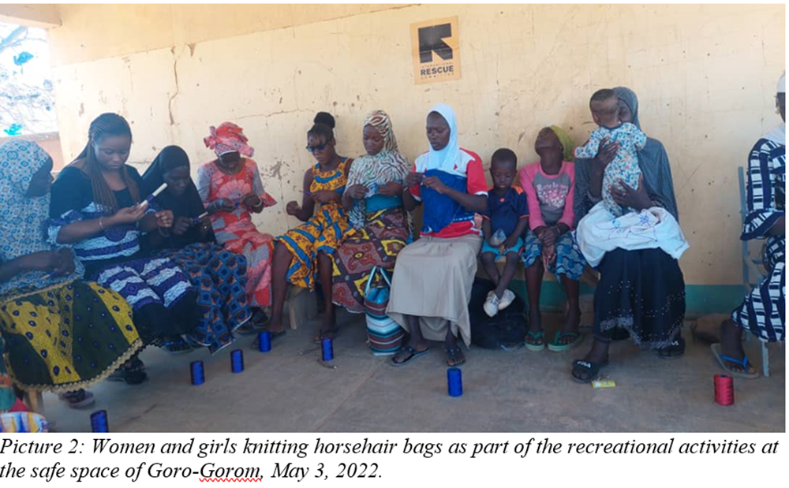
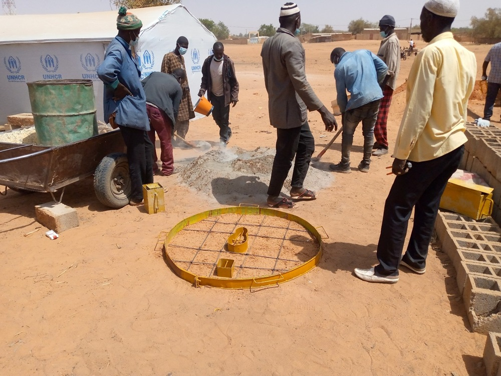
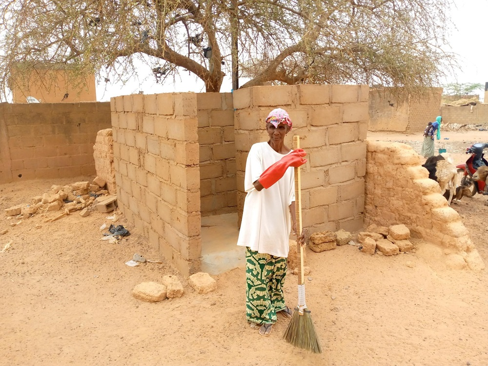
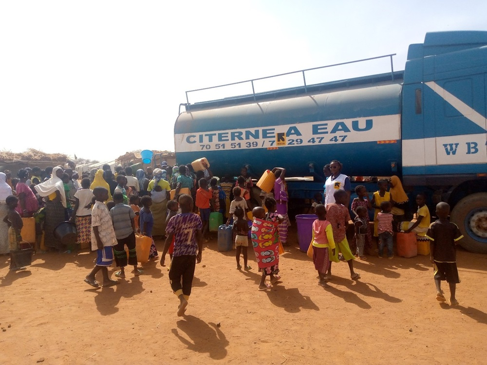

A propos de l'International Rescue Committee (IRC)
L'International Rescue Committee (IRC) est une organisation humanitaire internationale qui a été fondée en 1933
pour aider les personnes touchées par les conflits et les catastrophes à survivre, se rétablir et reprendre le contrôle
de leur avenir. L'IRC intervient dans plus de 40 pays à travers le monde, y compris au Burkina Faso, où elle
met en œuvre des programmes visant à répondre aux besoins des populations vulnérables, notamment les réfugiés,
les personnes déplacées et les communautés d'accueil.
Au Burkina Faso, l'International Rescue Committee (IRC) intervient dans plusieurs domaines :
- Protection des femmes et des enfants: L'IRC travaille à la protection des femmes et des enfants déplacés,
réfugiés et des communautés d'accueil.
- Santé et nutrition: L'IRC fournit des services de santé, y compris des soins de santé primaires, de santé
reproductive et de santé infantile, ainsi que des interventions de traitement et de prévention de la
malnutrition.
- Eau, hygiène et assainissement: L'IRC travaille à améliorer l'accès à l'eau potable, à l'assainissement et
aux services d'hygiène pour les populations vulnérables.
- Relèvement économique: L'IRC met en œuvre des programmes pour promouvoir des solutions durables pour les
personnes déplacées, les réfugiés et les populations hôtes, notamment en matière de relèvement économique et
d'autonomisation.
- Gouvernance: L'IRC soutient les communautés dans la résolution de leurs problèmes, la prévention des conflits
et la prise en compte des besoins de tous les groupes vulnérables.
Quelques actions en image de l'IRC

Espace sûr au profit des enfants PDIs
 Kit de dignité aux profit des femmes et filles PDIs
Kit de dignité aux profit des femmes et filles PDIs

Atelier de tissage

Construction de latrine

Latrine construite au profit des PDIs
 Remise symbolique de materiels d'entretien de pompe
Remise symbolique de materiels d'entretien de pompe
 PMH réhabilitée
PMH réhabilitée
 Construction d'une Superstructure
Construction d'une Superstructure

Citerne pour la distribution de l'eau aux PDIs